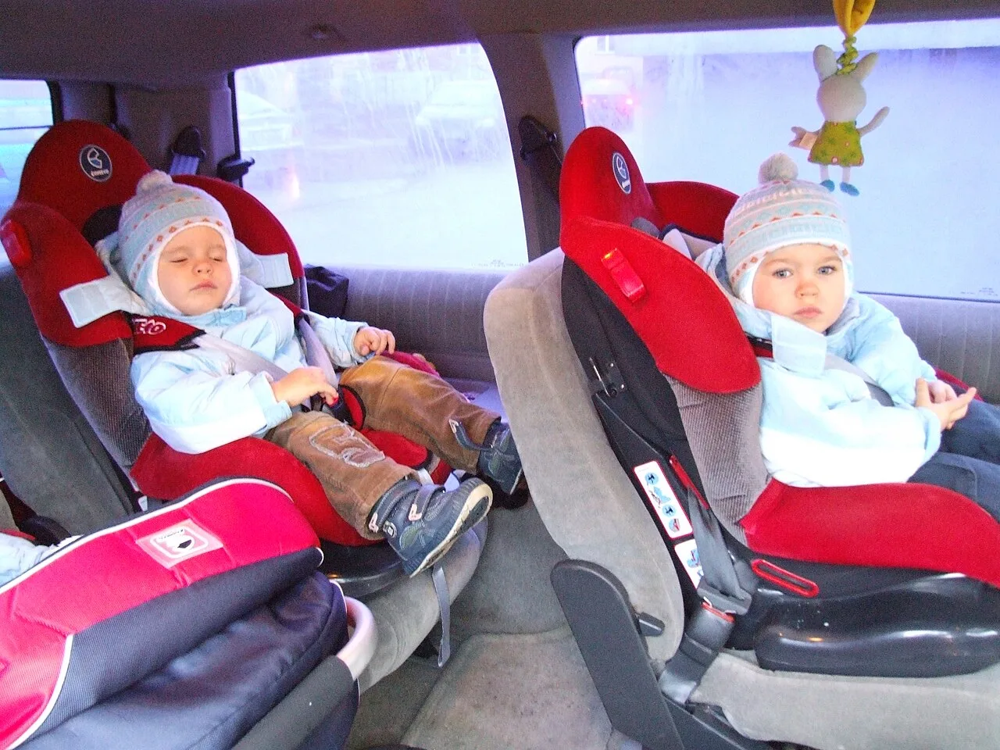
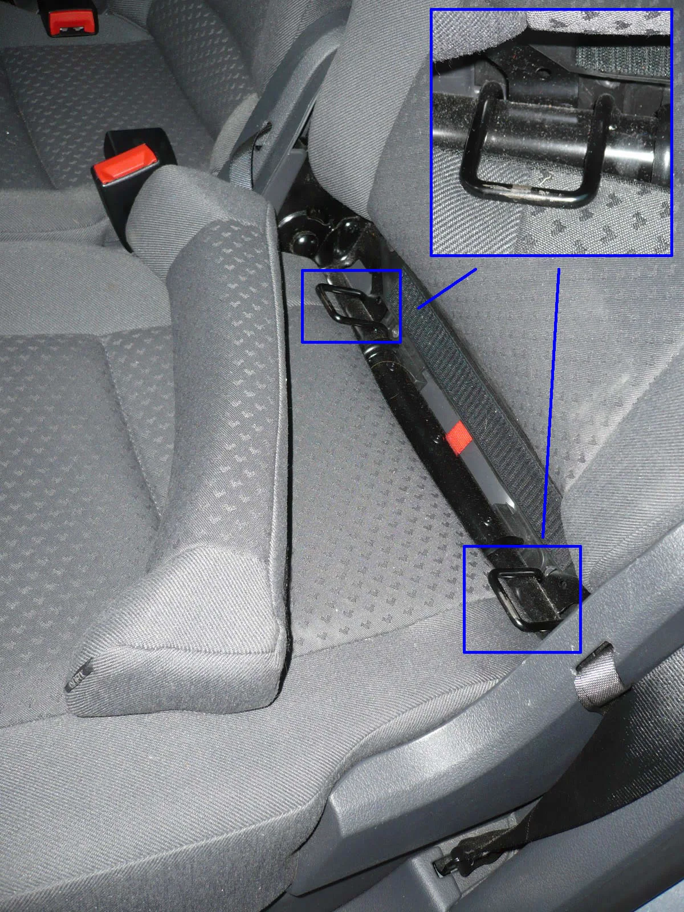

▲ ISOFIX 방식으로 장착된 카시트. 안전 옵션은 이름보다 작동 조건을 아는 것이 중요하다
아이를 태우는 차를 고를 때 확인해야 할 안전 사양 목록은 이미 여러 곳에서 다루고 있습니다. 문제는 대부분이 기능 이름과 한 줄 설명에서 끝난다는 점입니다. 정작 중요한 것은 그 기능이 어떤 상황에서 작동하고, 어떤 상황에서는 작동하지 않는지입니다. 이 글은 이름이 아니라 조건과 한계를 중심으로 정리했습니다.
1. 후석 승객 알림(ROA) — 같은 이름, 다른 성능
아이를 차에 두고 내리는 사고를 막기 위한 기능이 후석 승객 알림(ROA, Rear Occupant Alert)입니다. 그런데 같은 이름을 달고 있어도 작동 원리가 두 가지로 나뉘고, 그 차이가 결정적입니다.
첫 번째는 도어 로직 방식입니다. 주행 전에 뒷문이 열렸다 닫혔다면, 주행 후 시동을 끄고 내릴 때 "뒷좌석을 확인하세요"라는 안내를 띄우는 구조입니다. 실제로 뒷좌석에 무언가가 있는지는 전혀 감지하지 않습니다. 뒷문을 한 번이라도 열었다면 짐만 실었어도 경고가 뜹니다. 반대로 아이를 앞문으로 뒷좌석에 태웠다면 경고가 뜨지 않을 수 있습니다.
두 번째는 센서 방식입니다. 실내에 초음파 센서나 레이더 센서를 두고 뒷좌석의 움직임을 실제로 감지합니다. 하차 후 일정 시간 안에 움직임이 감지되면 경적을 울리거나 스마트폰으로 알림을 보냅니다. 이쪽이 실질적인 안전장치입니다.
다만 센서 방식에도 한계가 있습니다. 초음파 방식은 미세한 움직임을 잡아내는 데 한계가 있어, 깊이 잠든 영유아나 두꺼운 담요에 덮인 경우 감지가 어려울 수 있습니다. 레이더 방식은 호흡에 따른 미세 움직임까지 감지하도록 설계돼 상대적으로 유리합니다. 카탈로그에 'ROA 적용'이라고만 적혀 있다면, 어떤 방식인지 반드시 되물어야 합니다.
| 항목 | 도어 로직 방식 | 센서 방식 |
|---|---|---|
| 감지 대상 | 뒷문 개폐 이력 | 실제 실내 움직임 |
| 오경보 | 많음(짐만 실어도 알림) | 적음 |
| 미감지 위험 | 앞문으로 태우면 경고 없음 | 깊이 잠든 경우(초음파) |
| 하차 후 알림 | 없음(내리기 직전 안내만) | 경적·스마트폰 알림 |

▲ 뒷좌석 카시트에 앉은 아이들. ROA 방식에 따라 감지 성능이 갈린다
2. FCA·BCA·RCCA — 언제 개입하고 언제 안 하나
첨단 운전자 보조 시스템(ADAS)은 아이가 타고 있을 때 특히 의미가 큽니다. 다만 각 기능이 개입하는 조건은 생각보다 좁습니다.
전방 충돌방지 보조(FCA)는 앞차나 장애물을 감지해 자동으로 제동하는 기능입니다. 확인할 점은 감지 대상입니다. 차량만 감지하는 사양, 보행자까지 감지하는 사양, 자전거와 교차로 진입 차량까지 감지하는 사양이 등급별로 나뉩니다. 아이가 있는 주거지역 주행이 많다면 보행자 감지 포함 여부가 핵심입니다. 또한 대부분 일정 속도 이상에서는 충돌을 완전히 피하기보다 충격을 줄이는 수준으로 작동합니다.
후측방 충돌방지 보조(BCA)는 차선 변경 시 사각지대의 차량을 감지해 경고하고, 필요 시 조향에 개입합니다. 후방 교차 충돌방지 보조(RCCA)는 주차장에서 후진할 때 측면에서 접근하는 차량을 감지합니다. 아이를 태우고 내리는 장소가 대부분 주차장이라는 점을 생각하면, 이 두 기능은 실사용 빈도가 높습니다. 다만 사람은 감지 대상에서 제외되거나 감지 성능이 떨어지는 사양이 많습니다. 후진 시 주변에 아이가 있는 상황은 여전히 운전자가 직접 확인해야 하는 영역입니다.
페달 오조작 안전 보조(PMSA)는 저속에서 브레이크 대신 가속 페달을 강하게 밟았을 때 급발진을 막아주는 기능입니다. 주차 중 전방이나 후방에 장애물이 있는 상태에서 급가속 입력이 들어오면 출력을 제한합니다. 작동 영역은 주차 상황의 저속 구간으로 한정되며, 주행 중 오조작까지 막아주지는 않습니다.
| 기능 | 주 작동 상황 | 확인할 점 |
|---|---|---|
| FCA | 전방 추돌 위험 | 보행자·자전거 감지 포함 여부 |
| BCA | 차선 변경 | 경고만인지 조향 개입까지인지 |
| RCCA | 주차장 후진 | 사람 감지 가능 여부 |
| PMSA | 주차 중 저속 | 전·후방 모두 대응하는지 |
3. 에어백 6개보다 중요한 것 — 커튼이 2열까지 오는가
에어백은 흔히 개수로 이야기합니다. 운전석, 조수석, 앞좌석 사이드, 커튼에어백을 합쳐 최소 6개 이상이 권장 기준으로 통용됩니다. 하지만 아이를 뒷좌석에 태운다면 개수보다 중요한 항목이 있습니다.
커튼에어백이 2열까지 전개되는가입니다. 커튼에어백은 측면 충돌 시 창문 안쪽을 따라 커튼처럼 펼쳐져 탑승자의 머리를 보호합니다. 그런데 차종과 트림에 따라 1열 구간만 덮는 사양이 존재합니다. 아이 카시트는 거의 예외 없이 2열에 장착되므로, 커튼이 2열까지 오지 않는다면 정작 보호가 필요한 자리가 비는 셈입니다.
확인하는 방법은 간단합니다. 차량 실내에서 B필러와 C필러 상단, 천장 가장자리를 따라 'AIRBAG' 표기가 어디까지 이어지는지 보면 됩니다. C필러 근처까지 표기가 있다면 2열을 덮는 사양입니다. 카탈로그에서는 '커튼에어백(1·2열)'처럼 적용 열이 병기돼 있는지 확인하면 됩니다. 3열이 있는 차라면 3열 커튼 적용 여부도 별도 항목입니다.

▲ 등받이와 시트 쿠션 사이에 자리한 ISOFIX 앵커. 좌석마다 있는 것은 아니다
4. ISOFIX — 있다고 다 같은 게 아니다
ISOFIX는 카시트를 안전벨트 대신 차체에 직접 고정하는 국제 규격입니다. 시트 등받이와 쿠션 사이에 금속 고리 두 개가 있고, 여기에 카시트를 물리는 방식입니다. 안전벨트로 묶는 방식보다 오장착 가능성이 크게 줄어드는 것이 장점입니다.
확인해야 할 것은 세 가지입니다.
첫째, 어느 좌석에 있는가입니다. 대부분의 차량은 2열 양쪽 좌석에만 ISOFIX를 두고 가운데 좌석에는 두지 않습니다. 아이가 둘 이상이거나 가운데 자리에 태워야 하는 상황이라면 미리 확인해야 합니다.
둘째, 상단 고정 고리(톱테더)입니다. ISOFIX 하단 두 점만으로는 충돌 시 카시트 상단이 앞으로 회전하는 움직임을 완전히 막지 못합니다. 이를 잡아주는 것이 톱테더로, 시트 등받이 뒤쪽이나 트렁크 바닥, 천장에 고리가 마련돼 있습니다. 톱테더 고리가 몇 개 있고 어디에 있는지는 차종마다 다르며, 설명서에 위치가 표기돼 있습니다.
셋째, 공간 간섭입니다. 카시트를 후향(뒤보기)으로 장착하면 앞좌석과 간섭이 생길 수 있습니다. 신생아·영아용 후향 카시트를 쓸 계획이라면, 계약 전에 실제 카시트를 가져가 장착해보는 것이 가장 확실합니다.
5. 중고차라면 — 실전 확인 체크리스트
신차는 견적 시스템에서 옵션을 직접 고르지만, 중고차는 이전 소유자가 선택한 사양을 그대로 물려받습니다. 같은 연식, 같은 모델이라도 안전 사양 구성이 완전히 다를 수 있다는 뜻입니다. 아래 항목을 순서대로 확인하면 대부분 걸러집니다.
① 차량 등록증의 차대번호로 최초 출고 사양 조회 — 제조사 서비스센터나 공식 앱에서 확인 가능한 경우가 많습니다.
② 계기판 시동 시 경고등 점등 확인 — 에어백 경고등이 켜졌다가 꺼지는지 봅니다. 아예 켜지지 않는다면 전구나 회로가 제거됐을 가능성이 있습니다.
③ 실내 'AIRBAG' 표기 위치 육안 확인 — 앞서 설명한 커튼 적용 범위를 직접 봅니다.
④ 2열 시트 틈의 ISOFIX 고리 확인 — 좌우 각각 두 개씩 있는지 봅니다.
⑤ 인포테인먼트 설정 메뉴에서 ADAS 항목 확인 — 설정 메뉴에 해당 기능 항목 자체가 없다면 미장착입니다.
⑥ 침수·사고 이력 조회 — 에어백 전개 이력이 있는 차량은 복원 상태를 반드시 확인해야 합니다.
6. 정리 — 목록이 아니라 조건을 보자
정리하면, 아이와 타는 차에서 확인해야 할 것은 옵션 목록에 체크가 되어 있는지가 아니라 그 옵션이 어떤 조건에서 작동하는지입니다. ROA는 방식에 따라 성능이 갈리고, FCA는 감지 대상에 따라 등급이 나뉘며, 커튼에어백은 개수가 아니라 적용 열이 중요합니다. ISOFIX는 있느냐보다 어디에 몇 개가 있느냐가 실제 사용을 좌우합니다.
그리고 어떤 장비도 운전자가 뒷좌석을 직접 확인하는 습관을 대체하지는 못합니다. 차에서 내릴 때 뒷문을 한 번 열어보는 것—가장 단순하지만 가장 확실한 안전장치입니다.